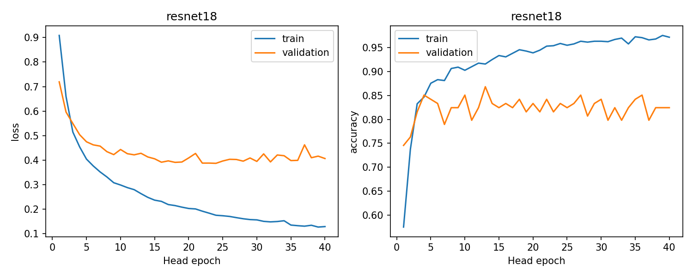
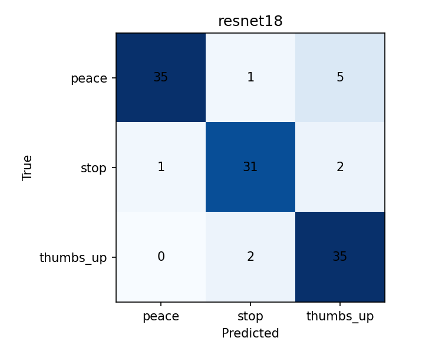
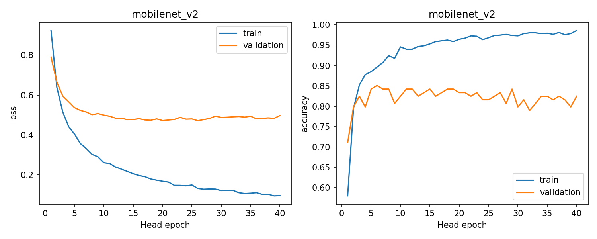
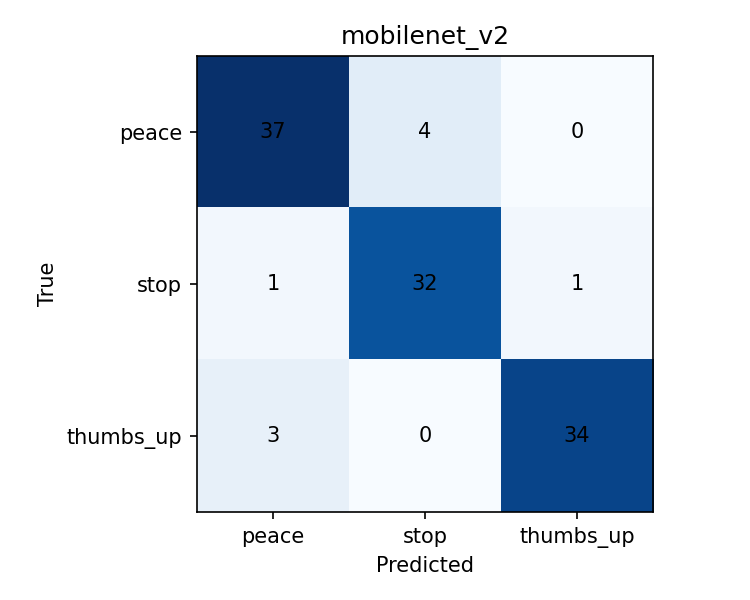
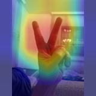
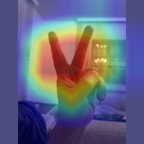

NEW: completed synthetic-frame ablation and results. The sections below document the earlier real-only reference stage.
Sapabekova Medina · ST-2405 · Computer Vision Assignment 2
Medina’s completed sections. The final joint report still needs Aiganym’s new SOTA method, ablation, and joint conclusions. This is not the complete 6–8-page submission.
We combined our two collections. The final dataset contains 761 real images: 335 from Medina and 426 from Aiganym, including seven HEIC images not counted in her 419-image A1 run. The classes are peace, stop and thumbs up. We converted images to RGB JPEG, corrected EXIF orientation and limited the long side to 1024 pixels. No image was enlarged at this stage.
We found no exact duplicate decoded images. We linked 13 near-image pairs using a perceptual hash distance of at most 6 and a grayscale thumbnail mean absolute difference of at most 0.04. We kept the similar images in the same split. Medina’s filename-based series also stayed together. The split has 535 training, 114 validation and 112 test images. It was selected using class and source counts, not model results.
These groups are not verified person identities. Some photos of the same person or session may appear across splits, especially in Aiganym’s collection. The data were studied in A1. We therefore need new participants and recording sessions for an independent generalisation test.
We used ImageNet-pretrained ResNet18 and MobileNetV2. Both backbones were frozen, including batch-normalisation statistics. We trained their three-class heads with Adam, learning rate 0.001 and batch size 32 for 40 epochs. We selected the epoch with the lowest validation loss. The random seed was 42.
Input images were padded to 160 × 160 with a grey background and normalised using ImageNet mean and standard deviation. Each training image had its original view and one fixed augmented view with random flip, affine changes and brightness/contrast changes. Features were computed once and reused. These are classifier-head learning curves, not full-network fine-tuning curves.
This protocol standardises the new A2 reference runs. It does not exactly reproduce A1: Medina previously used 224-pixel ResNet18 inputs, and Aiganym fine-tuned MobileNetV2. The new comparison must not be described as the isolated effect of a SOTA component.
| model | accuracy | macro_precision | macro_recall | macro_f1 | best_epoch | mean_forward_ms | test_images |
|---|---|---|---|---|---|---|---|
| resnet18 | 0.9018 | 0.9058 | 0.9038 | 0.9023 | 24 | 21.7753 | 112 |
| mobilenet_v2 | 0.9196 | 0.9209 | 0.9208 | 0.9204 | 26 | 16.0781 | 112 |
Both models use the same 112 real test images. The table reports macro averages, so each class has equal importance. One test image changes accuracy by about 0.89 percentage points. This is a single-seed experiment; a small difference is not evidence of a general model ranking.




We repeated evaluation after reducing brightness to 50% and after Gaussian blur with radius 2 on the 160-pixel image. These are artificial image transformations, not measured real environmental categories. No model settings were selected using these tests. New scenes and backgrounds remain a required follow-up for stronger environmental claims.
| model | condition | accuracy | macro_f1 | n |
|---|---|---|---|---|
| resnet18 | original | 0.9018 | 0.9023 | 112 |
| resnet18 | dark_50pct | 0.8750 | 0.8773 | 112 |
| resnet18 | blur_radius2 | 0.8125 | 0.8022 | 112 |
| mobilenet_v2 | original | 0.9196 | 0.9204 | 112 |
| mobilenet_v2 | dark_50pct | 0.8929 | 0.8933 | 112 |
| mobilenet_v2 | blur_radius2 | 0.8214 | 0.8193 | 112 |
The local Streamlit application accepts uploaded JPEG/PNG images and camera snapshots. It shows the predicted gesture, the three model scores, the forward-pass latency and a Grad-CAM overlay for the predicted class. It also contains the measured comparison and training plots. The weights are included, so the app does not retrain during use.
Grad-CAM uses gradients of the selected logit with respect to the last convolutional features. Average gradients weight each feature map, followed by ReLU and resizing. Warm regions show positive influence on the class score. The heatmap is not a segmentation mask and does not prove that the model has learned the correct concept.
Latency is measured after one warm-up pass on CPU. It excludes image decoding, preprocessing and Grad-CAM; Grad-CAM time is displayed separately. The benchmark averages 20 images. Hardware and background load affect these values. The camera function takes a still photograph; it is not real-time video tracking.


The model chooses among three known gestures, even for unknown gestures or images without a hand. A low-confidence warning is only an interface setting, not a validated rejection model. Softmax scores are not calibrated probabilities of correctness. Multiple hands, busy backgrounds and new users need further evaluation.
We used no generated images in these reference runs. Participant consent and publication rights must be confirmed before sharing the dataset publicly. With local execution, uploaded images are processed on the user’s computer. Aiganym’s SOTA component, its ablation and synthetic-media disclosure will be documented separately before the final submission.
Install requirements.txt and run python -m streamlit run app.py. To reproduce training, place the prepared dataset beside the project and run python train.py --data ../Gesture_A2_Data, followed by python check_and_stress.py. The original manifest fixes the splits. Saved outputs contain histories, test predictions, metrics, checkpoints and environment details.